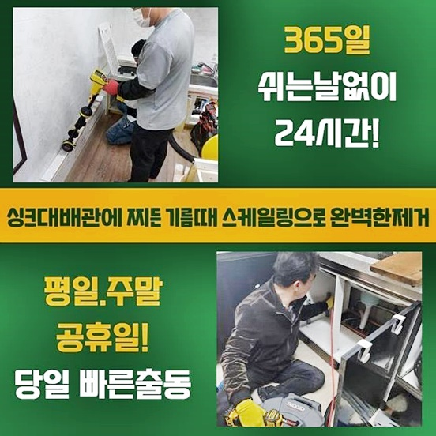
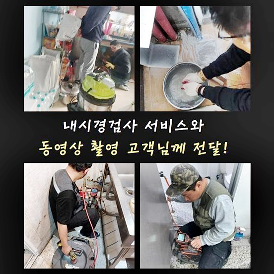
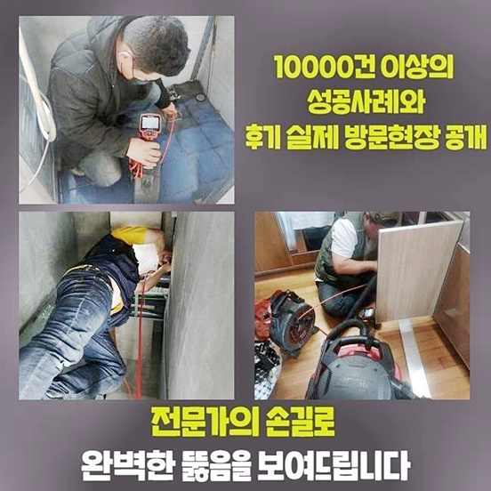
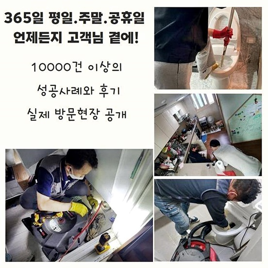
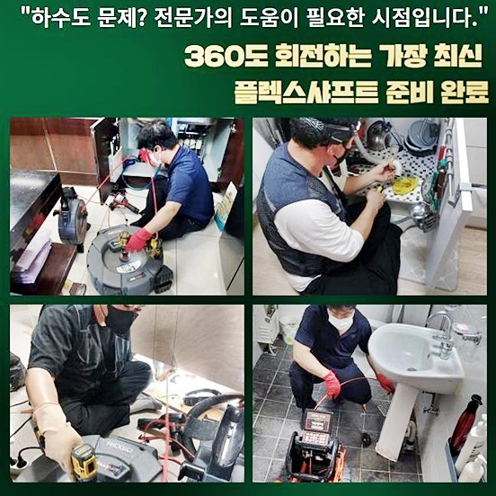
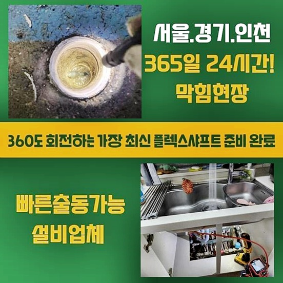

🏠 동대문 전농동하수구막힘 휘경동 하수관고압세척 출장수리
용인 하수구막힘 전문 시공 후기

📋 작업 개요
- 위치: 용인
- 서비스 유형: 하수구막힘, 배관막힘, 맨홀막힘, 누수수리, 역류해결, 뚫는업체, 배관청소, 고압세척
- 작업 일시: 2024. 8. 27. 0:25
- 업체명: 하수구수사대 (010-5615-2118)
🔍 문제 상황
동대문 전농동하수구막힘 휘경동 하수관고압세척 출장수리
오늘내방한 작업장소는 상가건물입니다
많은세대에서 막힘문제가 시작되었다는건 오랜시간 배관안속에 오염물질들이 축적된확률이 높기때문에 신속히 대응해야해요
만약에 방치하신다면 빠르게 건물전체의 피해가확산되고 물을쓰지못해 건물을 운영하는데 차질을빚는 결과로 이어지는만큼 주의하실 필요가있죠
건물관리자가 배관점검을 착수하는과정에서 막힘문제가 발발됐다는 전달을받았죠
자체적방법으로 보유하고있는 장비를 활용하여 직접처리하려고 작업해보셨지만 뚫리지않자 긴급하게 저희업체로 전화주신것이었죠
하수구가 막히게되었을때 직접해결하려는 시도는 위험하다고 말씀드릴수있죠
막힘문제나 역류까지 일어나는 대표적인원인을 말씀드리자면 하수구안에 쌓여버린 이물질을 말씀드릴수있죠
혼자서직접 해결해보고자 배수관수리를 진행하신다면 일시적인효과성을 받아볼수있지만 하수구안쪽 깊은쪽에 잔해물들을 밀어버리는 경우로이어져 오히려현상을 심화되게 만들수가있답니다

🔎 원인 분석
💡 전문가 진단: 정밀 진단 장비를 사용하여 슬러지의 고착 여부를 판명하고 타격/세척 작업을 실시했습니다.
겉으로증세가 나타나고있다면 상태를 살펴보신후 신속히 전문기술자의 도움을받는게 바람직하답니다
상가건물특성상 신속한처리가되지 못한다면 동시적으로 많은곳에서 막힘증세가 발현될겁니다
피해확산을 방지하고자한다면 원인이뭔지 확실하게 파악해 없애주어야해요
원인을 살피지않고 기계를투입시켜 작업을 진행하기보단 내시경장비처럼 전문기계를 써서 점검과정을 첫번째로 진행해야만해요
내시경은육안으로 살피기어려운 배관깊숙한곳을 파악할수있는 도구인데요
물길흐름에 맞춰서 점검과정을 거치면 막힘증세를 일으킨지점과 이물특징까지 파악이가능해 정확한 수립계획을 진행할수있어요!
경력이풍부한 전문인이 빠지는부분없이 빈틈없게끔 점검해본결과 메인배관부터 연결된배관까지 수많은종류의 오염물질들이 쌓인상태를 확인했습니다
배관속에는 기름슬러지같이 물에녹지않는 성질을가진 오염물들이 상당히축적된 상태였습니다
덩어리상태로 굳게되어 부피를키워버린 상태였기에 자칫잘못하다간 피해가커질뻔한 상황임을 파악할수가있었죠
긴구간에서 이물이 쌓인상태일경우 우선 샤프트기기와 석션기계를 활용하여 퇴적물질들을 제거해주는게 좋아요

🔧 작업 과정
샤프트기계를 활용할경우 굳어버린 이물질들을 분해하는 효과가있죠
분해된이물을 석션기를통해 빨아들이는 작업들을 반복시켜 진행하게되면 정체된 배관상태가 서서하게 뚫리는것을 보실수있어요
정체가 풀리고난뒤 메인으로 사용되고있는 바깥맨홀로 이동한뒤 고압세척기계를 투입합니다
고압세척기는 강력한압력의 물을쏘아 잔해물들을 없애주기에 딱딱한물질과 크기가커진 잔해물까지 깔끔히 제거시킵니다
하수관막힘이 잦게 발현되는곳이라면 주기적인 배관청소를 착수하실것을 권장드리고싶어요
많은세대가 즐비하고있는 상가라면 연관된문제들이 잦게 일어나기때문에 일년에 한두번은 배관청소를 착수해보는게 예방할수있다는점 참고해주신다면 도움이될겁니다
세척효과를 확실하게 만끽하려면 살펴야할것들이 존재해요
배수관은우리의 생각과는 달리난잡하게 얽혀있는상태고 내구도가좋지않은 상황일수있으므로 무조건적인 강력한수압을 입히게될경우 크랙문제가 발생되서 물이새는경우로 연결되는데요
수리과정중 발생할수있는 상황을방지하고 안전하게 작업과정이 이루어지려면 하수구의 구조자체와 특징에대하여 자세히 이해하고 있어야하며 배수관세척을 이룰땐 구간마다 서로다른 압력을 이용하는것이 좋아요
평소에 배관관리가 이뤄지지 않았다보니 예상보다도 많은시간들이 소요됐어요
여러가지 현장경험들을 가지고있는 전문기사가 꼼꼼히 배관세척을 반복해서 진행했더니 하수도속에 쌓인것들을 깔끔히 제거할수있었죠
마무리과정으로 내시경설비를 사용해서 하수구를 검수해보니 전과는달리 달라져있는 상황인것을 보여드릴수있었어요
의뢰자께서 흡족하다고 표현을해주셔서 저희들도 덩달아기쁨을 느낄수있었어요
배관막힘은 신속대응이 중요하겠지만 괜찮을거라는 생각을가지고 방치하는분이 많으신데요
2차피해로 불거지게되면 복구시키기까지 상당한시간과 비용까지 고려해야합니다
다시한번 강조하지만 하수구문제를 내버려두면 누수나역류같은 문제들을 초래시킬수있죠 예시로 욕실이나 주방쪽에서 물이원활히 배출되지못하면 일상생활에 지장이갑니다


✅ 작업 완료
더심화되면 역류하거나 냄새문제로 인하여 까다로울거에요
확실히 처리하기위하여는 전문업체에 맡겨서 확실한 문제파악후 대처하셔야만 한답니다
고객분의 중요한시간과 수리비가 발생되는 부분이기때문에 주의를들여 사전예방을 진행하시는게 좋겠습니다
하수구시스템이 무너졌을때 비용지출을 줄이고자한다면 막힘징조가 나타나자마자 대처하는것이 중요하다는것을 기억해주시길 바래요



⚠️ 베란다 누수 및 방수 관리 방법
- ✅ 비가 많이 올 때 창틀 주변이나 아래층 천장에 얼룩이 생기는지 정기적으로 확인해 보세요.
- ✅ 우수관 주변 실리콘 마감이 들뜨거나 깨진 틈새가 있는지 손상 여부를 수시로 체크하세요.
- ✅ 베란다 바닥 타일의 줄눈(메지)이 소실되면 그 틈으로 물이 침투하여 누수가 유발됩니다.
- ✅ 누수 의심 증상 발견 시 방치하면 아래층 손실이 커지므로 즉시 전문가의 진단을 받으십시오.
💡 핵심 정리
- 확실한 장비 작업(내시경 점검 및 샤프트 스케일링)으로 원인을 뿌리 뽑습니다.
- 작업 후 1년 이내에 동일한 부위 재발 시 100% 무상 A/S 서비스를 보장합니다.
- 서울 · 경기 · 인천 전 지역에 24시간 언제든 긴급 출동할 수 있도록 항시 대기 중입니다.
❓ 자주 묻는 질문 (FAQ)
🚨 용인 하수구막힘 문제로 고민이신가요?
정확한 원인 진단과 확실한 시공으로 재발 없는 해결을 약속드립니다.
24시간 긴급 출동 | 서울 · 경기 · 인천 전지역 | 1년 내 재발 시 무상 A/S